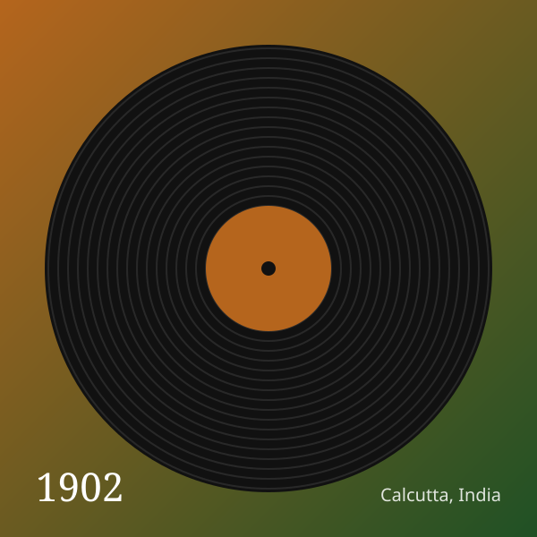

“My name is Gauhar Jaan!”
The first Indian singer on gramophone record, recorded in a Calcutta hotel room, announcing her own name.

- who
- Gauhar Jaan
- what
- Khayal in Raag Jogiya, Gramophone Company
- when
- 1902
- where
- Calcutta, India
In November 1902 the Gramophone Company set up a makeshift studio in two hotel rooms in Calcutta. The singer who climbed up to the horn was Gauhar Jaan, a courtesan-artist at a time when reformers were trying to legislate her profession out of existence. She sang a khayal in Raag Jogiya, then shouted her own name at the end so no one could mistake whose voice it was.
She went on to record more than 600 songs in some ten languages. She was not supposed to be the voice of a nation's first record. She made herself impossible to forget.